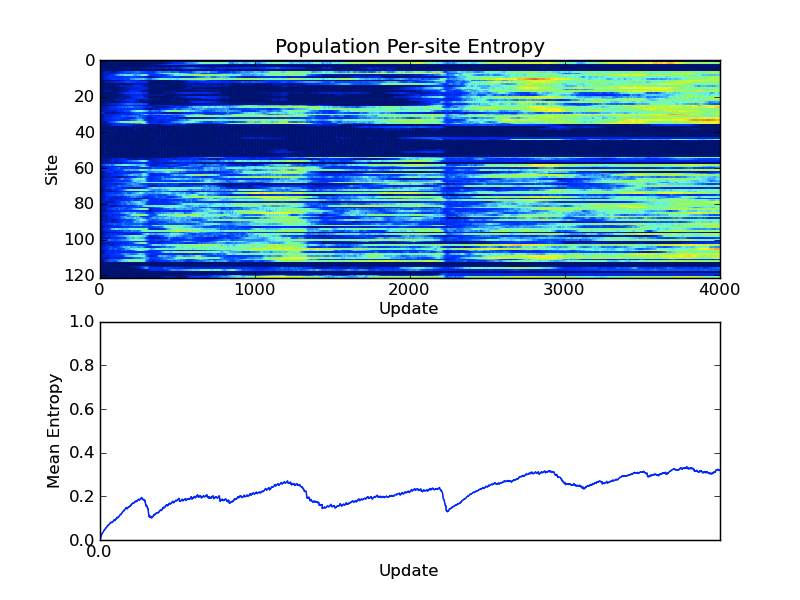
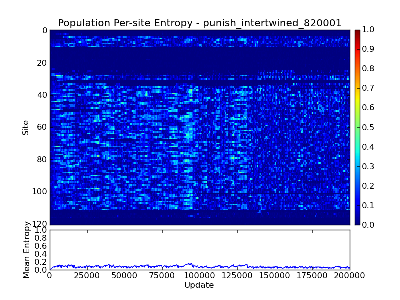

Week of April 16, 2012
Monday 4/16/12
STATUS:
- Ok, I need to figure out a couple things:
- The diversity of the population at different points.
- Extracted through the population diversity via the population entropy.
- The last common ancestor at the end.
- I can look at stats for that, I think.
6:17 PM
STATUS:
- Ok, I generated some graphs with entropy and genotype count. Aaaand, there just doesn’t seem to be anything interesting going on. In fact, genotype count AND genotypic entropy is greater (not significantly), in the noreward treatment than punishment. So, that hypothesis is wrong wrong wrong.
- Still, I need to have a look at the places where mutations happen in the genomes.
- So, one of the suggestions earlier was to look at the last common ancestor of the final dominant. This can be discovered by looking at the last line of stats.dat, column 10 (depth of most recent coalescence). This item is a tree depth. In lineage.dat (which I generate), column 4 is the tree depth, which number corresponds to the stats.dat:10. So, there’s the final ancestor that I should be looking at. Even so, it shouldn’t make that much different to my lineage map, since is really close to the end of the run anyway.
- This above also makes me re-think my coalescence maps. Specifically, I’ve been graphing stats.dat:10, which is tree-depth. For punishment, this line is steeper, which implies that 1) the tree of life here is taller (more mutations, more branchings), whereas in no-reward, the tree is shorter.
- This is just another way of looking at the number of accepted mutations.
- Lineage map height (# of ancestors)
- Steepness of depth of most recent coalescence
- Flame graph.
- Further, noreward has a long time between sweeps, whereas punish sweeps much more frequently.
- So, I’m going to make some flame graphs and see what there is to see here.
caninoko@dev-intel07:/mnt/scratch/caninoko/082/populations$ tar -zcvf control_intertwined_820001_populations.tar.gz control_intertwined_820001/
- Stuff is tarring up (takes forever), so I’m going to finish up my homework. :/
Tuesday 4/17/12
11:57 AM
STATUS:
- Last night, I set run 083 going (same as 082, but captures all the stats every update), so that I could look at the entropy measure.
- Chatting with matt, he let me know that the avida entropy measure is not per-site, but based on genotype ID. SIGH. So, it’s useless for what I’m looking for. BUT, he’s sending me some scripts that visualize sweeps. They are matlab, but I can transliterate them. :D
- The zipping up is done.
3:23 PM
Lab Mtg Notes:
- Presented fitness over time graphs and fitness bar-charts for ChangeEnv.
- Suggestions:
- HEATHER: add mutually exclusive flag to see what happens if you can only do one or the other task
- LUIS: add allowing to do the task multiple times and see how that changes things.
- LUIS: do the things that Mark suggested, with mapping relative fitness compared to ancestor using tournaments, in order to make it more valid.
8:53 PM
STATUS:
- Finished first stab at transliterating the script that calculates the site entropy.
rosiec@atlantis:~/research/devolab_research/evolution_of_modularity/raw_data/082/populations/control_intertwined_820001$ ls detail-*.spop* | sort -n -t "-" -k 2 | xargs python ../../../../../scripts/analysis/population_entropy_over_time.py -v -o by_site_entropy.csv
- Now, to write the rest of the thing. :/
Wednesday 4/18/12
12:12 AM
STATUS
- Finished the plotter too.
- The site entropy calculator takes longer than I’d hoped to run, so when I realized that I wasn’t normalizing by organism, I face palmed. So, that’s running again. It will also need to be integrated into the set of scripts that run on the HPCC after a run is complete.
- So, here are the non-normalized results. Promising!
rosiec@malp:/Volumes/rosiec/research/devolab_research/evolution_of_modularity/raw_data/082/populations/control_separated_820001$ python ../../../../../scripts/graph_generation/plot_by_site_entropy.py by_site_entropy.png by_site_entropy.csv
 (control intertwined)
(control intertwined)
(noreward separated)
(punish intertwined, punish separated)
- I might also add the last coalescent generations to the graph, so as to see how it matches up with what the by-site entropy measure says about the population.
- Also, I want to add the task map of the final dominant lineage, and see how it lines up. It may not mean anything in specific, but it might still give some insight.
- For flame graphs, quantify sweep by doing flamegraph, and then underneath (separate graph), mark where the coalescent ancestor is born, and then mark where it became the coalescent ancestor (born, and became king). This will KILL THE QUESTION OF SWEEPS and clarify what flamegraphs actually represent.
1:38 PM
The Story So Far
Squishness – Compaction of tasks
- Do genomes evolve toward squishness?
- Yes. Separated tasks evovlve to overlap as much as possible. This happens regardless of environment. The “possible” overlap is less under punishment regime.
- Further Experiments to confirm:
- Other Experiments:
- Try starting different tasks combinations as separated and measure their squishing.
- In hostile changing environments, do genomes limit their squishness?
- Yes. The “modularity basement” is higher in hostile changing environments.
- Further Experiments to confirm:
- Measure this specifically, and compare means.
- Is there a difference between the overlapping sections and the non-overlapping? Do those sections behave differently (are the related to functional change)?
- Is there a difference between the level of preservation of overlapping regions vs. not?
- Unknown, Hypothesize yes.
- Experiment to test: something to do with entropy measuring.
Evolvability
- Is there a difference between mutational landscape of hostile-evolved genomes, vs. others? Is it “flatter” or more “peaked”
- Unknown – Hypothesize yes.
- Experiments to test:
- Landscape possible mutations and calculate the fitness effects. **there may be an avida thing for this**
- Do analyses on last common ancestor of final population.
- Is there a difference in evolvability between hostile-evolved genomes vs. others.
- Unknown – Hypothesize yes.
- Experiments to test:
- Landscape possible mutations and calculate the fraction which change function. **there may be an avida thing for this**
- Do analyses on last common ancestor of final population.
- Are hostile-evolved genomes more evolvable in general? Do they adapt to new tasks faster than control or no-reward genomes?
- Unknown – Hypothesize no.
Fluctuating Landscapes
- Do fluctuating landscapes allow more rapid crossing of fitness valleys?
PopulationDynamics
- Are there multiple coexisting populations, or is it a single population evolving the task back and forth?
- Single Population.
- Further to confirm:
- Flamegraph with coalescence data (see above) underneath.
2:54 PM
STATUS:
- The organism-normalized by-site entropy calculations are done. Generating the graphs.
rosiec@malp:/Volumes/rosiec/research/devolab_research/evolution_of_modularity/raw_data/082/populations$ or i in *_??????; do echo $i; cd $i; python ../../../../../scripts/graph_generation/plot_by_site_entropy.py --title $i by_site_entropy__organisms__divider.png by_site_entropy.csv ; cd ../ ;done

- Right, so those look very different (especially the punishment) from the genotype site-based entropy measure. So, there for punishment, this would indicate that there are a small number of genotypes with LARGE proportions of the population, with a smattering of stragglers with small proportions of the population. It’s a very different population profile than we’ve seen. So… what kind of figure would display this?
- My initial thought was a flame graph-style histogram, with the y being the fraction of the population in that group, and the color being the number of genotypes in that category.
- Alternatively, think about that graph in one of Charles’s papers, where the population fractions colored in a bar chart.
- Finally, consider a set of colored bar-charts with the genotype population fractions colored differently.
4:15 PM
STATUS:
- ZOMG flamegraph.py is really fucking slow, for no good reason. So, I fixed it. It seems to be a bit zippier now,
though the graphing part still seems to take a long time :/ Not after I replaced pcolor with imshow. :D
- Split flamegraph data munging into a separate script, similar to how by-site entropy plotting works. Running the script to pull out the data now.
rosiec@malp:/Volumes/rosiec/research/devolab_research/evolution_of_modularity/raw_data/082/populations$ for i in *_??????; do echo $i; cd $i; ls detail-*.spop* | sort -n -t "-" -k 2 | xargs python ../../../../../scripts/analysis/population_phylogenetic_distance_over_time.py -v -o phylo_depth_abundances_over_time.csv; cd ../; done
rosiec@malp:/Volumes/rosiec/research/devolab_research/evolution_of_modularity/raw_data/082/populations$ for i in *_??????; do echo $i; cd $i; python ../../../../../scripts/graph_generation/plot_phylogenetic_depth_abundances_over_time.py --title $i phylo_depth_abundance_over_time.png phylo_depth_abundances_over_time.csv ; cd ../ ;done
- Now that I’ve separated the data extraction from the plotting, I can apply it to all the population sets I’ve got sitting up in the HPCC.
Thursday 4/19/12
1:59 PM
STATUS
- Last night, I set data generating for flamegraphs on the HPCC. It’s taking a really long time. L So far, about ¾ of control_intertwined is done, and there are six of them. Maybe I should have screened them separately. I could still do that. Ok, I will. Also, for whatever reason, the regular method using xargs seems to be fucking up on the HPCC. :/
caninoko@dev-intel07:/mnt/scratch/caninoko/082/populations$ for i in c*_i*_??????; do echo $i; if [ ! -e $i/phylo_depth_abundances_over_time.csv ] ; then cd $i; python ~/scripts/population_phylogenetic_distance_over_time.py -v -o phylo_depth_abundances_over_time.csv detail-?.spop* detail-??.spop* detail-???.spop* detail-????.spop* detail-?????.spop* detail-??????.spop* ; cd ../; else ; echo "Skipping." ; fi ; done
- Also, I’m going to create a separate flamegraph script to add a marker (line underneath), wherever the depth of the last phylogeny changed. Essentially, mark a point in white where the coalescent phylogenetic depth is for every update. It should form a series of horizontal lines that run along underneath the flamegraph. This will be cool to show. :D
- LATER: Ok, this is done.
rosiec@malp:/Volumes/rosiec/research/devolab_research/evolution_of_modularity/raw_data/082/populations$ for i in *_s*_??????; do echo $i; cd $i; python ../../../../../scripts/graph_generation/plot_phylogenetic_depth_abundances_over_time.py --title $i --most_recent_coalescence="../../SEPARATED/$i/data/stats.dat,10" phylo_depth_abundance_over_time__coalescence.png phylo_depth_abundances_over_time.csv ; cd ../; done
rosiec@malp:/Volumes/rosiec/research/devolab_research/evolution_of_modularity/raw_data/082/populations$ for i in *_i*_??????; do echo $i; cd $i; python ../../../../../scripts/graph_generation/plot_phylogenetic_depth_abundances_over_time.py --title $i --most_recent_coalescence="../../INTERTWINED/$i/data/stats.dat,10" phylo_depth_abundance_over_time__coalescence.png phylo_depth_abundances_over_time.csv ; cd ../; done
- So, one thing I’m interested in is how the sites that we’ve identified as being critical for a task correspond with the population’s consensus of what that site should be. If there isn’t a consensus about a site that we’ve identified as critical, there’s something wrong. And if there is a non-critical site which has significant consensus, those are probably hitchhikers, but we should seem them diverge over time.
- So, to this end, I’ve modified “population_entropy_over_time.py” to allow you to output the probabilities by site. Then I can import this file, and match it up to the data that I generate from “draw_map_task__using_lineage_and_alignment.py”.
- I should split this up into a data-generation and then plotting phase.
- Oh! And I should apply the lesson about imshow aspect=”auto” (or whatever it was) that I learned by doing the entropy plotting to the task-map plotting.
- I envision taking this data and combining it with the per-site, per-letter probabilities and overlay the info depending on the background in which the dominant lineage was born. Currently in map-task, everything is based on the ancestor, and there is no real expression of what update things were born in. So, the new version should reflect some kind of knowledge of what the background was (what timespan this thing lived in).
- Ok, I’ve updated “draw_map_task__using_lineage_and_alignment.py” to use aspect=”auto”. Let’s see how it looks.
rosiec@malp:/Volumes/rosiec/research/devolab_research/evolution_of_modularity/raw_data/082/INTERTWINED/control_intertwined_820001/data$ python ../../../../../../scripts/graph_generation/draw_map_task__using_lineage_and_alignment.py --lineage_map --show_mutations --show_phase --title "control_intertwined_820001" -v -a ../__aspect_auto.png 5 6 8 lineage.dat ./phenotype/
* So, hey, it works, sortof. If you look at the graph below, everything looks fine (degenerates ending in mutations). But if you look at the punishment graph, you see that is not the case. There are no bugs in my script. The problem is that there are simply not enough pixels to go around. Argh. L
- Ok, I raised the DPI of my figures to 300, and now all the lines show. Sigh.